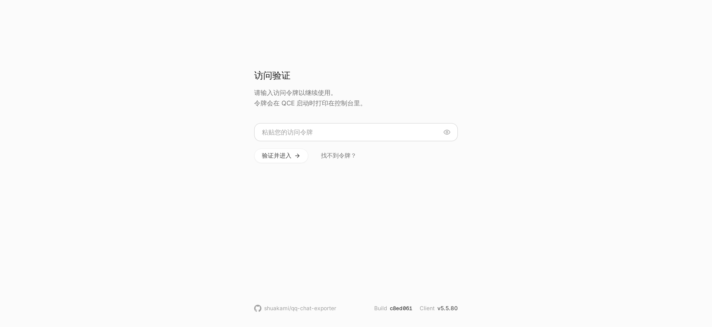
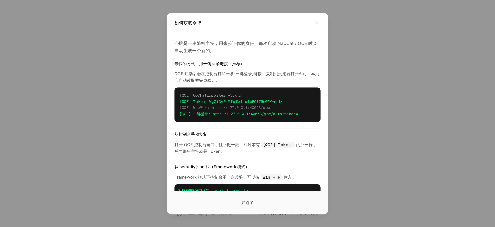
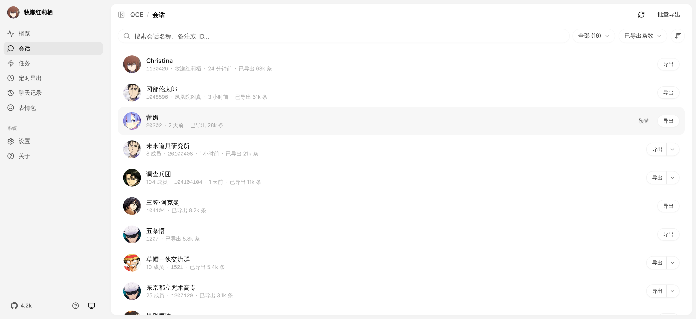
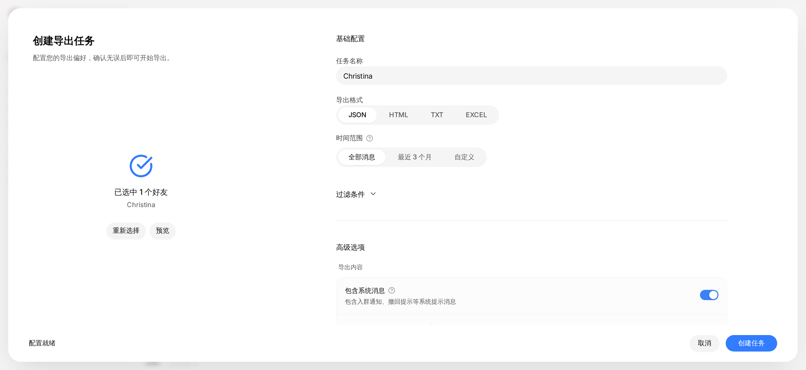

使用手册
你可以在 GitHub Releases 页面获取以下不同版本的程序包：
| 包类型 | 适用平台 | 说明 | 对应文件名 |
|---|---|---|---|
| 一键安装包 | Windows 7+ x64 | 自带运行环境，双击自动安装，支持快捷登录并自动打开操作网页。 | QQChatExporter-Installer-vxxx.exe |
| Shell 模式 | Windows x64 | 独立在后台运行的无界面 QQ，适合服务器运行或自动化备份。 | NapCat-QCE-Windows-x64-vxxx.zip |
| Shell 模式 | Linux x64 | 独立的无界面 Linux QQ 运行包，适合服务器部署或 Docker 环境。 | NapCat-QCE-Linux-x64-vxxx.tar.gz |
| Framework 模式 | Windows | 桌面 QQ 的插件版本，可以与你平时聊天的 QQ 客户端共存。 | NapCat-Framework-QCE-vxxx.zip |
| NapCat 插件商店包 | 跨平台 | 专给已经配置好 NapCat 环境的用户使用，可在插件商店直接装。 | napcat-plugin-qce.zip |
Windows 用户
- 绝大多数用户：直接下载当前最新版本下的一键安装包。双击安装后软件会自动提示扫码或快捷登录，然后弹出网页界面。
- 需要与日常 QQ 共存（比如说想一边照常挂着 QQ 聊天，一边让工具在后台跑定时备份）：下载
NapCat-Framework-QCE-vxxx.zip，并参考下文的 Framework 模式使用方法。
各个版本
一键安装包
安装程序会自动配置好后台环境和登录逻辑，安装完毕后自动在浏览器中打开 Web 操作界面。如果以后不需要了，运行安装目录里的 Uninstall QQ Chat Exporter.exe 即可完全卸载。或者在设置里面找到 QCE 应用卸载。
Shell 模式
在后台启动一个没有图形界面的 QQ 进程，需要你使用手机 QQ 扫码登录。由于没有桌面客户端，它全程在控制台（黑底白字的命令行窗口）里运行。
Framework 模式
作为插件注入到电脑上现有的桌面版 QQ 中，直接共享你已经在桌面 QQ 上登录的账号。适合不想重复扫码登录、想让工具在后台静默跑定时任务的场景。
Framework 模式使用方法
根据你的实际情况选择以下一种方式安装，切勿将两种方法混在一起操作：
方式 A：直接运行 napiLoader.bat（推荐普通用户使用）
此方式不需要你提前安装 LiteLoaderQQNT 插件框架。
- 下载
NapCat-Framework-QCE-vxxx.zip并解压到一个固定的文件夹（例如你的文档目录）。 - 必须先完全退出电脑上已经打开的 QQ 客户端。
- 进入解压后的文件夹，双击运行
napiLoader.bat。 - 此时 QQ 会自动启动并弹出登录页，按照平时的方式登录你的账号即可。
- 打开浏览器，访问
http://localhost:40653/qce，按照下文登录 Web 界面的方法找到安全令牌并输入。
方式 B：LiteLoaderQQNT 插件方式
仅在你本来就在使用 LiteLoaderQQNT，或者明确想通过插件目录来管理 NapCat 时才用。
- 确保你已经按照 LiteLoaderQQNT 官方文档装好了框架，并在 QQ 设置左侧能看到 LiteLoaderQQNT 选项。
- 将 Framework 包解压，并按照 LiteLoaderQQNT / NapCat 的常规插件部署要求放入对应的 plugins 目录。
启动引导
Shell 模式和 Framework 模式下载解压后即可直接运行，无需在电脑上配置其他复杂的系统环境。
第一步：解压文件
去 Releases 页面下载对应的压缩包并完整解压。再次提醒，不要下载 Source code 源码包。
第二步：选择模式启动
Shell 包有两种启动方式，根据你的实际需求选择：
A. 完整模式（需要登录 QQ，用于导出新记录）
- Windows：双击运行
launcher-user.bat - Linux：运行
./launcher-user.sh（首次在服务器部署请参考 Linux 部署指南） - 操作：运行后留在黑色的控制台窗口中，用手机 QQ 扫描里面打印出来的二维码登录。
- 进入界面：看到控制台打印出
Web界面: http://127.0.0.1:40653/qce这行字后，说明启动成功，此时可以用浏览器访问该地址。如果没看到这行字，先不要刷新网页。
B. 独立模式（不需要登录 QQ，只看以前导出的本地文件）
- Windows：双击运行
start-standalone.bat - Linux：运行
./start-standalone.sh - 操作：直接在浏览器访问
http://localhost:40653/qce，该模式不需要输入安全令牌。
第三步：登录 Web 界面
在完整模式下，首次打开 http://localhost:40653/qce 会看到一个需要输入访问令牌（Access Token）的验证页面：

你可以通过以下几种方法找到这串令牌：
方法 1：从 security.json 配置文件中查找（最稳妥）
Windows 用户按下键盘上的 Win + R 键，输入 %USERPROFILE%\.qq-chat-exporter 并回车；Linux 用户查看 ~/.qq-chat-exporter/ 目录。
用记事本打开该目录下的 security.json，找到 accessToken 字段：
{
"accessToken": "<复制这一串字符，这就是你的访问令牌>",
"createdAt": "2026-07-14T00:00:00.000Z",
"allowedIPs": ["127.0.0.1", "::1"],
"tokenExpired": "..."
}把那一串长字符复制并粘贴到网页的输入框里，点击验证即可进入。
方法 2：从控制台日志复制
部分版本启动时，黑色的控制台窗口里会直接打印出 [QCE] Token: xxx 这一行，后面的字符就是令牌；如果打印了类似 http://127.0.0.1:40653/qce/auth?token=... 的链接，直接复制到浏览器打开就能自动跳过验证。新版本由于安全考虑可能会隐藏此打印，若没看到，请统一使用方法 1。
方法 3：一键安装包用户
安装程序会自动处理验证逻辑并开启网页，通常不需要你手动查找令牌。
提示：在令牌有效期内，重启软件令牌是不会变的。如果提示登录失败，请确认你复制的是当前最新生成的 security.json 里的内容。登录页上的「找不到令牌？」按钮也附带了相同的图文引导：

浏览器打不开 http://localhost:40653/qce 怎么办？
如果浏览器提示 ERR_CONNECTION_REFUSED（连接被拒绝），通常不是浏览器的问题，而是 QCE 后台程序根本没有运行成功。
请按照以下顺序检查：
- 检查黑色的控制台命令行窗口是否还在，有没有被误关闭。
- 观察控制台里是否有红色的报错文本。如果没有看到
Web界面: http://127.0.0.1:40653/qce这行字，说明程序还没跑起来，此时刷新网页没有任何作用。 - 检查自己运行的文件对不对：完整模式必须运行
launcher-user.bat，独立模式运行start-standalone.bat。 - 不要直接双击运行
napcat.mjs，也不要把 GitHub 上的Source code源码包当作安装包来双击哟 - 退出了已有的、已登录的 QQ 吗
- 如果反复失败，建议回到 Release 页面重新下载官方发布包，找个干净的目录完整解压后再试。这可以解决一半的问题！
导出聊天记录
成功进入网页界面后，点击左侧菜单的 “会话”，这里会列出你的所有双人好友和加入的群聊。

基础操作步骤
- 你可以在列表中找到你要备份的好友或群聊
- 点击该行右侧的 “导出” 按钮。
- 在弹出的窗口中选择你需要的格式和时间范围，点击 “创建任务”。
- 页面会自动切换到左侧的 “任务” 页面查看进度，等待状态变成完成后，可以直接点击下载，或者打开文件在电脑上的存放位置。
设置项
创建导出任务时的弹窗界面如下：

- 格式选择：
HTML：导出为标准网页文件。排版样式与手机 QQ 聊天界面一致，适合日常直接双击打开阅读。JSON：纯结构化数据文件，适合有编程基础、需要自己写脚本分析数据的用户。TXT：纯文本文件，不包含任何图片、视频和表情包，文件体积非常小。Excel：表格文件，方便后续通过表格软件进行关键词筛选、数据统计或排序。
- 媒体资源（图片/视频/表情）：
默认会同步下载。需要特别注意：导出 HTML 格式时，会同时生成一个
.html文件和一个resources文件夹。这两者是一个整体，千万不要把它们分开存放或重命名，否则打开网页时里面的图片和视频会变成空白。如果需要发给别人，建议勾选“导出为 ZIP”打包输出。 - 时间范围： 选“全部消息”会抓取该会话在当前电脑上的所有历史记录；如果消息太多，可以选“最近 3 个月”或通过日历自定义时间区间。
- 过滤条件： 支持输入特定的关键词过滤消息，也可以勾选或取消勾选入群通知、撤回提示等系统日志。
进阶功能
1. 批量导出
如果你想把号上的几十个群全部存下来，不需要一个个点。在“会话”页面点击右上角的 “批量导出” 按钮，勾选“全选”或者手动勾选某几个群，点击“导出选中”，统一设置好格式后，让电脑挂机等待任务全部跑完即可。
2. 定时自动备份
在“定时导出”页面点击 “新建定时任务”。你可以把调度策略设为“每天”。
一个高效的备份技巧是：将时间范围设为“昨天”。这样工具每天半夜只会自动增量抓取过去 24 小时产生的新消息，耗时极短。月底时，你可以利用 “合并备份” 功能，把每天生成的零碎文件拼接成一个完整的大文件。
3. 导出已删除好友或临时对话
如果你想导出的人已经不是你的好友，或者属于没有保存的临时群会话，可以到 “概览” 页面点击 “新建任务”，选择 “手动输入QQ号”，直接输入对方的 QQ 号或群号即可强制建立导出任务。不过具体能不能导出还是取决于本地有没有历史记录QAQ！
4. 百万级超大群流式导出
如果是积累了多年的高活跃度大群，消息量可能达到几十万甚至上百万条，普通导出方式有可能会吃满电脑内存！这个时候，你可以在导出弹窗中点开 “高级选项”，勾选 “流式导出”。开启后，程序会将数据切块分段处理，最终输出一个特殊的 ZIP 包。
解压后打开 index.html，网页会采用动态加载机制（也就是，鼠标滚轮滚到哪里，数据就加载到哪里），确保低配电脑和浏览器也能流畅查看百万条记录！
说到这里，你应该学会使用 QCE 了！如果有问题，随时都可以到 GitHub 里面找我们哟！